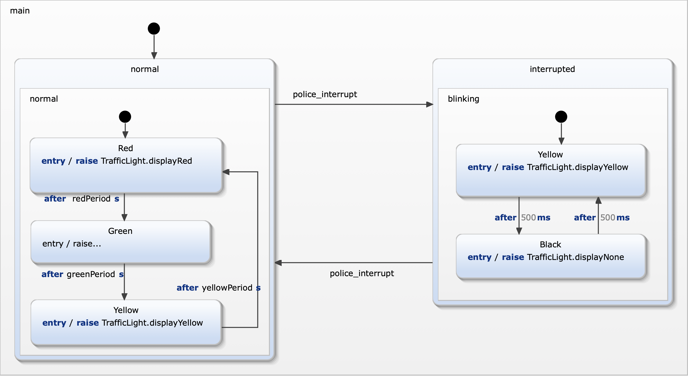

In this exercise you modeled a statechart extension using a test driven approach. The result should be comparable to the follwing statechart...

| requirement | modelling approach |
|---|---|
| R6: police can interrupt autonomous operation. | An new incoming event police_interrupt triggers a transition to a new state interrupted. |
| R6a: Autonomous opreration can be interrupted during any pahse indicated by constant red, yellow and green lights. | The states Red, Green, and Yellow are grouped within a new composite state normal. This state is the source state of the transition to state interrupted and thus also applies to all substates. |
| R7: In interruptetd mode the yellow light blinks with a constant frequency of 1 Hz. (on -> 0.5s, off 0.5s). | State interrupted is a composite state with two substates Yellow and Black. These switch the yellow light on and off. Timed transitions between these states ensure correct timing for blinking. |
| R8: Police can resume to regular autonomous operation. | A transition triggered by police_interrupt leads from state interrupted to state normal. |
| R8a: When regular operation is resumed the traffic light restarts with red (R) light on. | When activating state normal its substate Red is activated by default. |